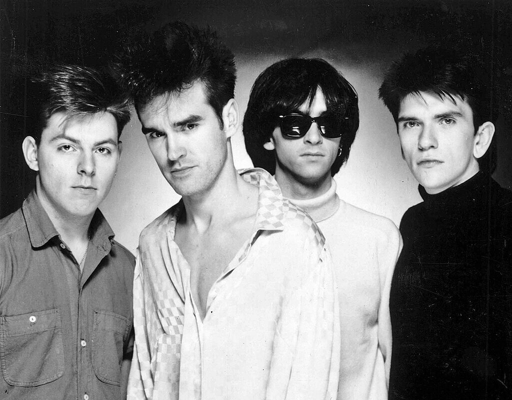
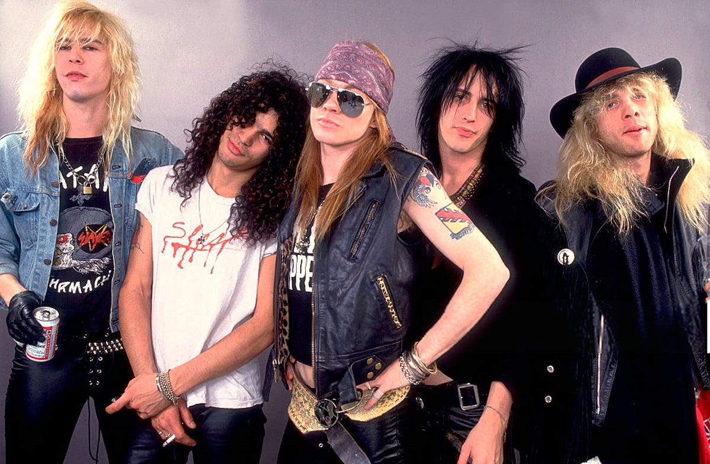

Historia do Rock and Rolll
Rock and roll nos anos 80
O rock dos anos 80 foi uma das décadas mais dinâmicas e ecléticas para o gênero, marcada pela diversidade sonora, pela introdução de novas tecnologias e pela proliferação de subgêneros que definiram a era. A década viu o auge de alguns estilos clássicos, o surgimento de novos movimentos e uma maior comercialização da música, com a ascensão das rádios, das MTV e das performances visuais. Em muitos aspectos, o rock dos anos 80 refletiu a cultura pop da época, caracterizada pelo consumismo, pela exuberância e pela experimentação.
Os anos 80 viram o auge do glam metal (também conhecido como hair metal), um subgênero que combinava o hard rock com influências do glam rock dos anos 70, criando uma sonoridade mais voltada para o entretenimento, com riffs poderosos, vocais melódicos e uma forte ênfase na aparência e no visual. As bandas de glam metal eram conhecidas por seus cabelos volumosos, roupas extravagantes e atitudes de rebeldia. Mötley Crüe, Poison, Def Leppard e Bon Jovi, são alguns dos expoentes do gênero.
Os anos 80 também marcaram o crescimento do rock alternativo e do pós-punk, que se distanciaram do mainstream, buscando uma sonoridade mais experimental e introspectiva. Essas bandas geralmente rejeitavam a grandiosidade do glam metal e do hard rock em favor de um som mais cru e visceral. As maiores bandas do estilo são: The Smiths, R.E.M. e The Cure.
Nos anos 80, o rock também se tornou mais comercial, com uma forte ênfase no AOR (Album-Oriented Rock), ou rock voltado para álbuns e rádios. Bandas e artistas dessa vertente buscavam composições mais polidas e focadas em melodias que agradassem uma audiência ampla. Journey, Boston, Foreigner e REO Speedwagon, alcançaram o sucesso usando essa fórmula.
Enquanto o glam metal era dominado por uma estética mais pop e teatral, o metal pesado nos anos 80 se tornou mais agressivo e técnico, com o surgimento do thrash metal. Esse estilo era caracterizado por riffs rápidos e pesados, baterias intensas e uma atitude mais radical e política. Banda como Metallica, Slayer, Megadeth e Iron Maiden dominaram o estilo.
Nos últimos anos da década, o hard rock teve um renascimento com o sucesso de bandas como Guns N' Roses. O álbum Appetite for Destruction (1987) trouxe uma energia crua e visceral ao rock, ao mesmo tempo que misturava influências do glam metal com uma sonoridade mais suja e agressiva.